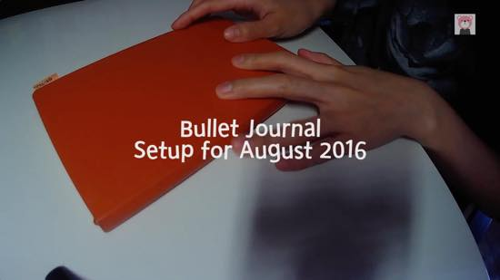
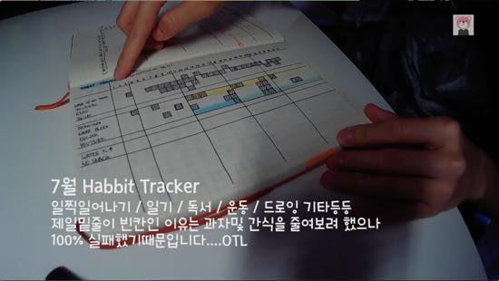
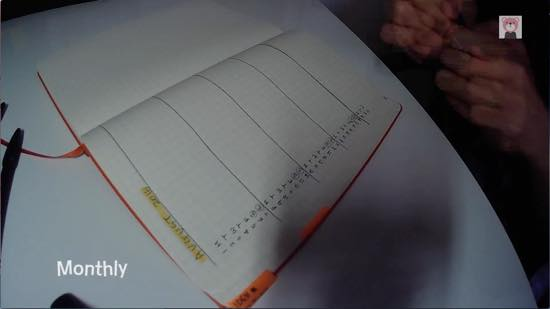
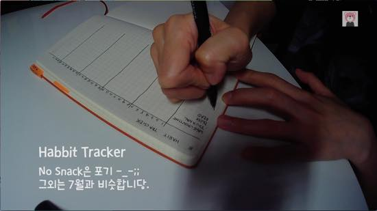
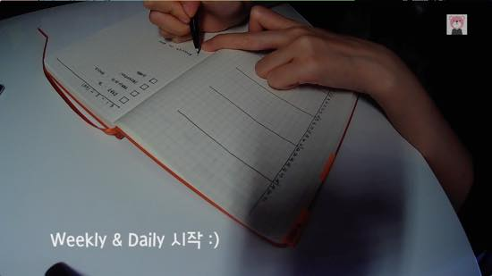

비디오를 찍어보았는데 도저히 업로드할만한게 못되어서 스샷이라도 올려봅니다 :p
스케쥴러는 해야할일이 엄청 많을때만 잠깐 사용하고 또 한동안 안쓰다가 다시 꺼내쓰고 하는편인데
최근에는 그나마 이것도 구글캘린더에 다 적어놓는 편이라 전혀 사용안하고 있었더랬죠
불렛저널을 쓰기시작한건 일정관리보다 손글씨를 적을때 손에 힘이 하나도 안들어가는걸 보고 느므 깜짝놀라서 시작했어요;;;
그림그리는게 직업인 인간인데;; 이것도 몽땅 컴퓨터로 해결하다보니 세상에;; 펜을쥔 손에 힘이 느므 없는겁니다;;
글씨도 내가 이렇게 글씨를 못썼나;; 싶을정도구요 충격받아서 저널/다이어리/플래너 뭐 이런걸로 검색해보다가
불렛저널을 발견하게 되었습니다 :p
자세한 소개는 여기: http://bulletjournal.com/
7월 한달 써본 소감은 우선 정해진 레이아웃 없이 자기가 원하는대로 만들어 나가면 되니까 편하더라구욤
초반에는 바른생활 어쩌구하면서 일정관리에 힘써보려 했습니다만. 그냥 그때그때 기록이나 아이디어 등등을 적는쪽으로 방향을 돌렸습니다 ^^;;
KEY설정은 TASK 위주로:: 진행중, 캔슬, 뒤로미룸 정도만 만들어 놨습니다 :p

은근 칸칸히 칠하는 재미가 있었던 Habbit Tracker
운동 / 제시간에 일어나기 (아침에 일어나는거 느므느므 힘들어요;ㅂ;) / 독서 / 개인작업 등등 야심차게 적어놨습니다
사진에도 적어놨지만 젤 밑줄 물많이 마시기와 스낵 금지는 100% 실패......;;;;

8월 세팅을 시작합니다 :)


8월에는 할일 보다는 하루 한일 위주로 적고있어요. 정해진 form이 없으니까 편하네요 홍홍
9월 set up은 제대로 찍어볼수 있기를 ㅡㅡ;;;
그럼 끗!